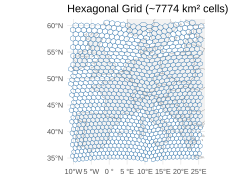
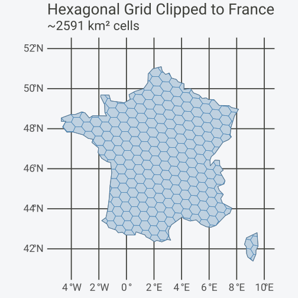
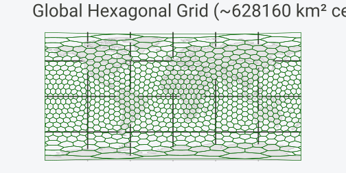
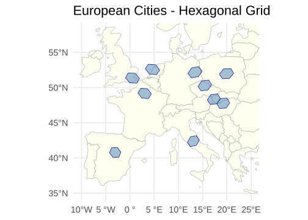

Shared grids across datasets, polygon generation, resolution selection, and GIS export.
Installation
# Install from CRAN
install.packages("hexify")
# Or install development version from GitHub
# install.packages("pak")
pak::pak("gcol33/hexify")One Grid, Many Datasets
Define a grid once, reuse it everywhere. Same grid object = guaranteed spatial alignment across datasets.
The Problem
You often have:
Several independent datasets (observations, sensors, surveys)
All in longitude/latitude coordinates
Collected at different times or from different sources
You want to:
Put everything on one common global grid
Be sure the grids actually match
Combine results later without subtle errors
The Solution: Shared Grid Objects
# Step 1: Define the grid once
# This is your shared spatial reference system
grid <- hex_grid(area_km2 = 5000)
print(grid)
#> HexGridInfo Specification
#> -------------------------
#> Aperture: 3
#> Resolution: 8
#> Area: 7773.97 km^2
#> Diagonal: 94.74 km
#> CRS: EPSG:4326
#> Total Cells: 65612
# Step 2: Create multiple datasets with different structures
set.seed(123)
# Dataset 1: Bird observations (note different column names)
bird_obs <- data.frame(
species = sample(c("Passer domesticus", "Turdus merula", "Parus major"), 50, replace = TRUE),
longitude = runif(50, -10, 30),
latitude = runif(50, 35, 60)
)
# Dataset 2: Mammal records
mammal_obs <- data.frame(
species = sample(c("Vulpes vulpes", "Meles meles", "Sciurus vulgaris"), 40, replace = TRUE),
lon = runif(40, -10, 30),
lat = runif(40, 35, 60)
)
# Dataset 3: Climate stations
climate_data <- data.frame(
station_id = paste0("WS", 1:20),
x = runif(20, -10, 30),
y = runif(20, 35, 60),
temp_c = rnorm(20, 12, 5)
)
# Step 3: Attach all datasets to the SAME grid
birds <- hexify(bird_obs, lon = "longitude", lat = "latitude", grid = grid)
mammals <- hexify(mammal_obs, lon = "lon", lat = "lat", grid = grid)
climate <- hexify(climate_data, lon = "x", lat = "y", grid = grid)
cat("Birds: ", nrow(as.data.frame(birds)), "observations in", n_cells(birds), "cells\n")
#> Birds: 50 observations in 48 cells
cat("Mammals:", nrow(as.data.frame(mammals)), "observations in", n_cells(mammals), "cells\n")
#> Mammals: 40 observations in 38 cells
cat("Climate:", nrow(as.data.frame(climate)), "stations in", n_cells(climate), "cells\n")
#> Climate: 20 stations in 20 cellsCombining at the Cell Level
Once data are hexified, longitude/latitude no longer matter for
analysis. The cell_id becomes the shared spatial key:
# Extract data frames with cell IDs
birds_df <- as.data.frame(birds)
birds_df$cell_id <- birds@cell_id
mammals_df <- as.data.frame(mammals)
mammals_df$cell_id <- mammals@cell_id
climate_df <- as.data.frame(climate)
climate_df$cell_id <- climate@cell_id
# Aggregate each dataset by cell
bird_richness <- aggregate(
species ~ cell_id,
data = birds_df,
FUN = function(x) length(unique(x))
)
names(bird_richness)[2] <- "bird_species"
mammal_richness <- aggregate(
species ~ cell_id,
data = mammals_df,
FUN = function(x) length(unique(x))
)
names(mammal_richness)[2] <- "mammal_species"
mean_temp <- aggregate(
temp_c ~ cell_id,
data = climate_df,
FUN = mean
)
names(mean_temp)[2] <- "mean_temp"
# Join datasets by cell_id - guaranteed to align because same grid
combined <- merge(bird_richness, mammal_richness, by = "cell_id", all = TRUE)
combined <- merge(combined, mean_temp, by = "cell_id", all = TRUE)
head(combined)
#> cell_id bird_species mammal_species mean_temp
#> 1 6634 NA 1 12.18894
#> 2 6635 1 NA NA
#> 3 6716 NA 1 NA
#> 4 6718 1 NA NA
#> 5 6800 NA 1 NA
#> 6 6882 NA 1 NAGrid Generation
hexify provides functions to generate grid polygons over regions for visualization and analysis.
Grid Over a Rectangular Region
# Create grid specification
grid <- hex_grid(area_km2 = 5000)
# Generate hexagons over Western Europe
europe_hexes <- grid_rect(c(-10, 35, 25, 60), grid)
# Get European countries for context
europe <- hexify_world[hexify_world$continent == "Europe", ]
ggplot() +
geom_sf(data = europe, fill = "gray95", color = "gray60") +
geom_sf(data = europe_hexes, fill = NA, color = "steelblue", linewidth = 0.4) +
coord_sf(xlim = c(-10, 25), ylim = c(35, 60)) +
labs(title = sprintf("Hexagonal Grid (~%.0f km² cells)", grid@area_km2)) +
theme_minimal(base_size = FIG_BASE_SIZE)
Grid Over a Polygon (Shapefile)
Clip a grid to any sf polygon boundary:
# Get France boundary
france <- hexify_world[hexify_world$name == "France", ]
# Generate grid covering mainland France
grid <- hex_grid(area_km2 = 2000)
france_grid <- grid_rect(c(-5, 41, 10, 52), grid)
# Clip grid to France boundary
france_grid_clipped <- st_intersection(france_grid, st_geometry(france))
#> Warning: attribute variables are assumed to be spatially constant throughout
#> all geometries
ggplot() +
geom_sf(data = france, fill = "gray95", color = "gray40", linewidth = 0.5) +
geom_sf(data = france_grid_clipped, fill = alpha("steelblue", 0.3),
color = "steelblue", linewidth = 0.3) +
coord_sf(xlim = c(-5, 10), ylim = c(41, 52)) +
labs(title = "Hexagonal Grid Clipped to France",
subtitle = sprintf("~%.0f km² cells", grid@area_km2)) +
theme_minimal(base_size = FIG_BASE_SIZE)
Global Grid
# Coarse global grid (be careful with fine grids - many cells!)
grid <- hex_grid(area_km2 = 500000)
global_hexes <- grid_global(grid)
ggplot() +
geom_sf(data = hexify_world, fill = "gray90", color = "gray70", linewidth = 0.2) +
geom_sf(data = global_hexes, fill = NA, color = "darkgreen", linewidth = 0.3) +
labs(title = sprintf("Global Hexagonal Grid (~%.0f km² cells)", grid@area_km2)) +
theme_minimal(base_size = FIG_BASE_SIZE) +
theme(axis.text = element_blank(), axis.ticks = element_blank())
Multi-Resolution Analysis
Analyze data at multiple spatial scales using different target areas.
# Sample data
set.seed(42)
observations <- data.frame(
species = sample(c("Species A", "Species B", "Species C"), 100, replace = TRUE),
lon = runif(100, -10, 30),
lat = runif(100, 35, 60)
)
# Fine resolution (~1000 km² cells)
grid_fine <- hex_grid(area_km2 = 1000)
obs_fine <- hexify(observations, lon = "lon", lat = "lat", grid = grid_fine)
# Coarse resolution (~10000 km² cells)
grid_coarse <- hex_grid(area_km2 = 10000)
obs_coarse <- hexify(observations, lon = "lon", lat = "lat", grid = grid_coarse)
cat(sprintf("Fine resolution: %d unique cells (area: %.1f km²)\n",
n_cells(obs_fine), grid_fine@area_km2))
#> Fine resolution: 98 unique cells (area: 863.8 km²)
cat(sprintf("Coarse resolution: %d unique cells (area: %.1f km²)\n",
n_cells(obs_coarse), grid_coarse@area_km2))
#> Coarse resolution: 93 unique cells (area: 7774.0 km²)Scale-Dependent Patterns
# Extract data with cell IDs
fine_df <- as.data.frame(obs_fine)
fine_df$cell_id <- obs_fine@cell_id
coarse_df <- as.data.frame(obs_coarse)
coarse_df$cell_id <- obs_coarse@cell_id
# Species richness at each scale
richness_fine <- aggregate(species ~ cell_id, data = fine_df,
FUN = function(x) length(unique(x)))
richness_coarse <- aggregate(species ~ cell_id, data = coarse_df,
FUN = function(x) length(unique(x)))
cat(sprintf("Fine scale: mean %.2f species per cell\n", mean(richness_fine$species)))
#> Fine scale: mean 1.01 species per cell
cat(sprintf("Coarse scale: mean %.2f species per cell\n", mean(richness_coarse$species)))
#> Coarse scale: mean 1.06 species per cellSpatial Joins
Join datasets based on shared grid cells rather than proximity.
# Dataset 1: Weather stations
stations <- data.frame(
station_id = paste0("ST", 1:50),
lon = runif(50, -10, 30),
lat = runif(50, 35, 60),
temperature = rnorm(50, 15, 5)
)
# Dataset 2: Cities
cities <- data.frame(
city = c("Vienna", "Paris", "London", "Berlin", "Rome",
"Madrid", "Prague", "Warsaw", "Budapest", "Amsterdam"),
lon = c(16.37, 2.35, -0.12, 13.40, 12.50,
-3.70, 14.42, 21.01, 19.04, 4.90),
lat = c(48.21, 48.86, 51.51, 52.52, 41.90,
40.42, 50.08, 52.23, 47.50, 52.37)
)
# Use a coarse grid for joining disparate points
grid <- hex_grid(area_km2 = 50000)
# Hexify both datasets with the same grid
stations_hex <- hexify(stations, lon = "lon", lat = "lat", grid = grid)
cities_hex <- hexify(cities, lon = "lon", lat = "lat", grid = grid)
# Extract with cell IDs
stations_df <- as.data.frame(stations_hex)
stations_df$cell_id <- stations_hex@cell_id
cities_df <- as.data.frame(cities_hex)
cities_df$cell_id <- cities_hex@cell_id
# Join by cell_id
city_weather <- merge(
cities_df[, c("city", "cell_id")],
aggregate(temperature ~ cell_id, data = stations_df, FUN = mean),
by = "cell_id",
all.x = TRUE
)
city_weather
#> cell_id city temperature
#> 1 865 London NA
#> 2 1478 Madrid NA
#> 3 1482 Paris NA
#> 4 1484 Amsterdam NA
#> 5 1540 Berlin NA
#> 6 1567 Prague 11.60463
#> 7 1591 Rome NA
#> 8 1594 Vienna 12.45533
#> 9 1621 Budapest NA
#> 10 2240 Warsaw 7.30659Cell-Level Aggregation and Neighbors
hex_summarize() aggregates data per cell without
manually splitting and merging, and get_neighbors() finds
the ring of cells surrounding a given cell — useful for smoothing,
spatial lag features, or checking what surrounds a hotspot.
# Aggregate the station data straight from the HexData object
hex_summarize(stations_hex, mean_temp = mean(temperature), n_stations = length(temperature))
#> cell_id cell_cen_lon cell_cen_lat cell_area_km2 n_points mean_temp
#> 1 1486 8.8605921 56.44133 69967.85 1 4.33327138
#> 2 1617 11.2500000 37.27999 69967.85 3 13.86698499
#> 3 756 2.7876081 59.40683 69967.85 1 14.78591715
#> 4 1702 23.6524007 40.11980 69967.85 1 22.07036539
#> 5 1533 0.9055244 38.03217 69967.85 2 15.79263349
#> 6 784 3.8134141 56.73586 69967.85 2 17.33034539
#> 7 891 -6.9845461 48.48206 69967.85 1 19.34760702
#> 8 2240 22.3252813 52.74188 69967.85 1 7.30659018
#> 9 1562 5.9134033 39.97473 69967.85 1 13.69252087
#> 10 836 -8.8840946 52.56766 69967.85 2 19.77801460
#> 11 918 -8.1917714 46.29966 69967.85 1 12.47700445
#> 12 2941 28.7694288 59.95664 69967.85 1 17.23507876
#> 13 2211 21.3956718 48.53188 69967.85 2 8.61959723
#> 14 1756 26.2563977 35.79230 69967.85 1 7.72706532
#> 15 1588 6.1897627 35.80560 69967.85 1 16.79208370
#> 16 1566 13.2634952 47.96291 69967.85 2 14.03583407
#> 17 864 -5.7057188 50.63018 69967.85 1 20.44733536
#> 18 919 -4.3481495 46.43340 69967.85 1 0.09218036
#> 19 2242 18.6865859 56.73586 69967.85 1 23.30899470
#> 20 1589 7.7872318 37.75542 69967.85 1 14.54380966
#> 21 2943 19.7123919 59.40683 69967.85 2 16.62937840
#> 22 2235 29.4014718 42.06641 69967.85 1 18.96105332
#> 23 1564 9.3676906 43.78074 69967.85 1 9.41982974
#> 24 1567 15.4482390 50.29623 69967.85 1 11.60462511
#> 25 1534 2.3674390 40.11958 69967.85 1 6.70912517
#> 26 2267 26.8454720 52.74001 69967.85 1 14.80152001
#> 27 1645 14.7127682 37.75542 69967.85 1 13.94307721
#> 28 1618 13.0258784 39.62728 69967.85 1 10.48546862
#> 29 1619 14.9098954 41.91219 69967.85 1 12.45167799
#> 30 2268 25.3924346 54.80755 69967.85 1 5.79488808
#> 31 1537 7.3499007 46.08969 69967.85 1 10.36833374
#> 32 1560 2.8450855 35.92015 69967.85 1 19.41016981
#> 33 1477 -5.8644255 37.80961 69967.85 1 21.22466440
#> 34 1509 3.4280982 46.36031 69967.85 2 10.81345455
#> 35 809 -6.7691252 55.02709 69967.85 1 18.67035320
#> 36 1594 17.3249995 48.35421 69967.85 1 12.45533116
#> 37 2206 28.3644255 37.80961 69967.85 1 12.86376434
#> 38 1481 -0.4835992 46.44662 69967.85 1 11.88084926
#> 39 946 -5.6635964 44.26334 69967.85 1 15.98975606
#> 40 1538 9.2365048 47.96291 69967.85 1 22.04184729
#> 41 2944 15.3912481 58.91103 69967.85 1 16.88313865
#> n_stations
#> 1 1
#> 2 3
#> 3 1
#> 4 1
#> 5 2
#> 6 2
#> 7 1
#> 8 1
#> 9 1
#> 10 2
#> 11 1
#> 12 1
#> 13 2
#> 14 1
#> 15 1
#> 16 2
#> 17 1
#> 18 1
#> 19 1
#> 20 1
#> 21 2
#> 22 1
#> 23 1
#> 24 1
#> 25 1
#> 26 1
#> 27 1
#> 28 1
#> 29 1
#> 30 1
#> 31 1
#> 32 1
#> 33 1
#> 34 2
#> 35 1
#> 36 1
#> 37 1
#> 38 1
#> 39 1
#> 40 1
#> 41 1
# The 6 cells surrounding a given cell (k = 1), or a wider ring with k > 1
some_cell <- stations_hex@cell_id[1]
get_neighbors(some_cell, grid)
#> [[1]]
#> integer64
#> [1] 1 757 784 1485 1513 2215
get_neighbors(some_cell, grid, k = 2)
#> [[1]]
#> integer64
#> [1] 1 757 784 1485 1513 2215 28 2944 55 756 783 811 1484 1512 1540
#> [16] 2214 2242Choosing Resolution
By Target Area
Use hex_grid() with area_km2 to get the
closest available resolution:
# Target: 100 km² cells
grid_100 <- hex_grid(area_km2 = 100, aperture = 3)
cat(sprintf("Target ~100 km²: resolution %d (actual: %.1f km²)\n",
grid_100@resolution, grid_100@area_km2))
#> Target ~100 km²: resolution 12 (actual: 96.0 km²)
# Target: 1000 km² cells
grid_1000 <- hex_grid(area_km2 = 1000, aperture = 3)
cat(sprintf("Target ~1000 km²: resolution %d (actual: %.1f km²)\n",
grid_1000@resolution, grid_1000@area_km2))
#> Target ~1000 km²: resolution 10 (actual: 863.8 km²)
# Target: 10000 km² cells
grid_10000 <- hex_grid(area_km2 = 10000, aperture = 3)
cat(sprintf("Target ~10000 km²: resolution %d (actual: %.1f km²)\n",
grid_10000@resolution, grid_10000@area_km2))
#> Target ~10000 km²: resolution 8 (actual: 7774.0 km²)Resolution Table (Aperture 3)
| Resolution | # Cells | Cell Area (km²) | Spacing (km) |
|---|---|---|---|
| 0 | 12 | 42,505,468.5 | 7005.8 |
| 1 | 32 | 15,939,550.7 | 4290.2 |
| 2 | 92 | 5,544,191.5 | 2530.2 |
| 3 | 272 | 1,875,241.3 | 1471.5 |
| 4 | 812 | 628,159.6 | 851.7 |
| 5 | 2.4K | 209,730.9 | 492.1 |
| 6 | 7.3K | 69,948.7 | 284.2 |
| 7 | 21.9K | 23,320.5 | 164.1 |
| 8 | 65.6K | 7,774.0 | 94.7 |
| 9 | 196.8K | 2,591.4 | 54.7 |
| 10 | 590.5K | 863.8 | 31.6 |
| 11 | 1.8M | 287.9 | 18.2 |
| 12 | 5.3M | 96.0 | 10.5 |
| 13 | 15.9M | 32.0 | 6.1 |
| 14 | 47.8M | 10.7 | 3.5 |
| 15 | 143.5M | 3.6 | 2.0 |
Comparing Apertures
Different apertures offer different resolution steps:
target_area <- 1000 # km²
cat(sprintf("Target: ~%d km² cells\n\n", target_area))
#> Target: ~1000 km² cells
for (ap in c(3, 4, 7)) {
grid <- hex_grid(area_km2 = target_area, aperture = ap)
n_cells <- 10 * (ap^grid@resolution) + 2
cat(sprintf("Aperture %d: resolution %d -> %.1f km² (%s cells globally)\n",
ap, grid@resolution, grid@area_km2,
format(n_cells, big.mark = ",")))
}
#> Aperture 3: resolution 10 -> 863.8 km² (590,492 cells globally)
#> Aperture 4: resolution 8 -> 778.3 km² (655,362 cells globally)
#> Aperture 7: resolution 6 -> 433.5 km² (1,176,492 cells globally)| Aperture | Best For | Trade-offs |
|---|---|---|
| 3 | Fine resolution control, dggridR compatibility | Slowest cell growth |
| 4 | Power-of-2 scaling, GIS workflows | Moderate resolution steps |
| 7 | Rapid cell count growth, coarse analysis | Largest resolution jumps |
| 4/3 | Balance of 4’s fast start + 3’s fine control | More complex indexing |
Grids on Other Bodies
A grid partitions a sphere, and radius_km sets which
sphere. Pass a radius in kilometres or the name of a body:
mars <- hex_grid(area_km2 = 1000, radius_km = "mars")
mars
#> HexGridInfo Specification
#> -------------------------
#> Aperture: 3
#> Resolution: 9
#> Area: 733.48 km^2
#> Diagonal: 29.10 km
#> CRS: +proj=longlat +R=3389500 +no_defs
#> Radius: 3389.50 km
#> Total Cells: 196832
# The same grid, by radius
identical(mars@area_km2, hex_grid(resolution = mars@resolution, radius_km = 3389.5)@area_km2)
#> [1] TRUECell geometry is angular: which cell a coordinate falls in, where
centres and corners sit, the parent-child hierarchy and the neighbours
are the same on every body. The radius sets the kilometre figures — cell
area, diagonal, spacing, and the resolution that a target
area_km2 picks.
earth <- hex_grid(resolution = 5)
moon <- hex_grid(resolution = 5, radius_km = "moon")
lon <- c(0, 16.37, -70.5)
lat <- c(0, 48.21, -33.4)
identical(lonlat_to_cell(lon, lat, moon), lonlat_to_cell(lon, lat, earth))
#> [1] TRUE
c(earth = earth@area_km2, moon = moon@area_km2)
#> earth moon
#> 209730.93 15597.17Areas come from the sphere of that radius, 4 * pi * r^2;
Earth keeps the WGS84 ellipsoid area. Named bodies carry the IAU mean
radii (Archinal et al. 2018) tabulated by JPL Solar System Dynamics:
mercury, venus, earth,
moon, mars, ceres,
jupiter, io, europa,
ganymede, callisto, saturn,
enceladus, titan, uranus,
neptune, pluto.
radius_km reaches every function that reports
kilometres, because the grid object carries it:
dgearthstat(), cell_area(),
hexify_compare_resolutions() and the sf exports all read
the grid’s radius.
Coordinates on another body
EPSG codes name Earth reference systems, so a grid built on another radius carries a longlat CRS on the sphere of that radius:
mars@crs
#> [1] "+proj=longlat +R=3389500 +no_defs"Every sf object built from that grid carries it, so cells, centres and hexified data come back in the body’s own coordinates. A planet of your own works the same way through a radius in kilometres:
world <- hex_grid(area_km2 = 5000, radius_km = 4200)
world@crs
#> [1] "+proj=longlat +R=4200000 +no_defs"crs also takes a value of your own, as an EPSG code or a
PROJ or WKT string, which is how a projected system for the body reaches
the grid:
hex_grid(area_km2 = 5000, radius_km = 4200,
crs = "+proj=laea +lat_0=0 +lon_0=0 +R=4200000 +no_defs")@crs
#> [1] "+proj=laea +lat_0=0 +lon_0=0 +R=4200000 +no_defs"A basemap for such a body is any file sf or terra reads:
sf::st_read() takes a shapefile, GeoJSON or GeoPackage of
coastlines, terra::rast() takes a GeoTIFF. Both go to
hexify_heatmap(basemap = ).
Both backends take a radius. H3 reports a cell’s area as its solid angle times Earth’s radius squared, so another radius scales those areas by the square of the radius ratio:
h3_mars <- hex_grid(resolution = 5, type = "h3", radius_km = "mars")
#> H3 cells are not exactly equal-area; hexagon area varies ~2x within a resolution.
#> H3 cell IDs name a position in H3's topology, which Uber's H3 reads on Earth. A grid on another body reuses that topology and its own radius for areas; the IDs are not interchangeable with Earth H3 data.
#> This message is displayed once per session.
h3_mars@area_km2 / hex_grid(resolution = 5, type = "h3")@area_km2
#> [1] 0.2830447
# H3 measures against the WGS84 authalic radius, so that is what divides out
(3389.5 / 6371.007180918475)^2
#> [1] 0.2830447One caveat rides along with H3. A cell ID names a position in H3’s
topology, which Uber’s H3 reads on Earth. A grid on another body reuses
that topology and its own radius for areas, so its IDs are that topology
on that body, not interchangeable with Earth H3 data.
h3_crosswalk() needs both grids on the same body for the
same reason.
Working with sf
Convert HexData to sf
# Hexify some data
grid <- hex_grid(area_km2 = 20000)
result <- hexify(cities, lon = "lon", lat = "lat", grid = grid)
# Convert to sf points (uses cell centers)
sf_points <- st_as_sf(result, geometry = "point")
class(sf_points)
#> [1] "sf" "data.frame"
# Convert to sf polygons (for choropleth maps)
sf_polys <- st_as_sf(result, geometry = "polygon")
class(sf_polys)
#> [1] "sf" "data.frame"
# Or generate polygons directly from cell IDs
unique_cells <- cells(result)
cell_polys <- cell_to_sf(unique_cells, grid)Visualize with ggplot2
europe <- hexify_world[hexify_world$continent == "Europe", ]
ggplot() +
geom_sf(data = europe, fill = "ivory", color = "gray70") +
geom_sf(data = cell_polys, fill = "steelblue", alpha = 0.5, color = "darkblue") +
coord_sf(xlim = c(-10, 25), ylim = c(35, 58)) +
labs(title = "European Cities - Hexagonal Grid") +
theme_minimal(base_size = FIG_BASE_SIZE)
Export to GIS Formats
Use sf’s st_write() to export grids for use in external
GIS software:
# Generate a grid
grid <- hex_grid(area_km2 = 10000)
europe <- grid_rect(c(-10, 35, 25, 60), grid)
# Export to various formats
st_write(europe, "europe_grid.gpkg", layer = "hexgrid") # GeoPackage
st_write(europe, "europe_grid.shp") # Shapefile
st_write(europe, "europe_grid.geojson") # GeoJSON
st_write(europe, "europe_grid.kml", layer = "hexgrid") # KML (Google Earth)Edge Cases
Handling NA Coordinates
data_with_na <- data.frame(
lon = c(16.37, NA, 2.35, 13.40),
lat = c(48.21, 48.86, NA, 52.52)
)
grid <- hex_grid(area_km2 = 1000)
result <- hexify(data_with_na, lon = "lon", lat = "lat", grid = grid)
#> Warning in hexify(data_with_na, lon = "lon", lat = "lat", grid = grid): 2
#> coordinate pairs contain NA values and will be skipped
# Check which rows have valid cell assignments
cat("Cell IDs:", result@cell_id, "\n")
#> Cell IDs: 6.254575e-319 6.050624e-319
cat("NA indicates invalid coordinates\n")
#> NA indicates invalid coordinatesPolar Regions
Coordinates with latitude > 89° may have projection artifacts. The grid remains valid, but polygon visualization can be distorted near poles.
Date Line
Polygons crossing the date line (lon = ±180°) are handled
automatically. cell_to_sf() applies
sf::st_wrap_dateline() internally, so flat map projections
render correctly without manual intervention.
Function Summary
| Task | Function |
|---|---|
| Create grid specification | hex_grid(area_km2 = ...) |
| Assign points to cells | hexify(df, lon, lat, grid) |
| Get grid from HexData | grid_info(result) |
| Get unique cell IDs | cells(result) |
| Count cells | n_cells(result) |
| Extract data frame | as.data.frame(result) |
| Convert to sf | st_as_sf(result, geometry = "polygon") |
| Generate polygons | cell_to_sf(cell_ids, grid) |
| Grid over region | grid_rect(bbox, grid) |
| Global grid | grid_global(grid) |
| Coordinate conversion |
lonlat_to_cell(), cell_to_lonlat()
|
| Compare resolutions | hexify_compare_resolutions() |
| Aggregate data per cell | hex_summarize(result, ...) |
| Find neighboring cells | get_neighbors(cell_id, grid, k = ...) |
| Merge/split multi-resolution cells |
hex_compact(), hex_uncompact()
|
| Distance between cells | hex_distance(cell_id1, cell_id2, grid) |
| Extract raster values at cell centers | hex_extract(raster, grid) |
| Zonal statistics over cell polygons | hex_zonal(raster, grid) |
| Map ISEA cells to H3 (or vice versa) | h3_crosswalk() |
| Per-cell area | cell_area(cell_ids, grid) |
See Also
vignette("quickstart")- Getting started with hexifyvignette("visualization")- Plotting withplot(),hexify_heatmap()vignette("theory")- Mathematical foundations (ISEA projection, apertures)